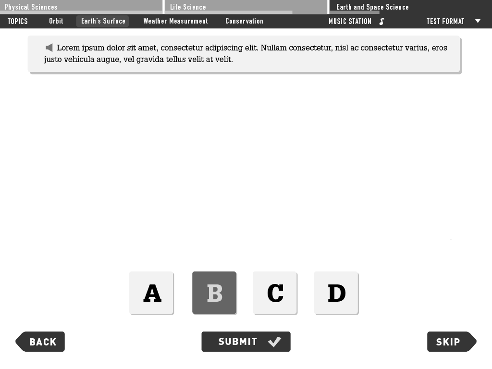
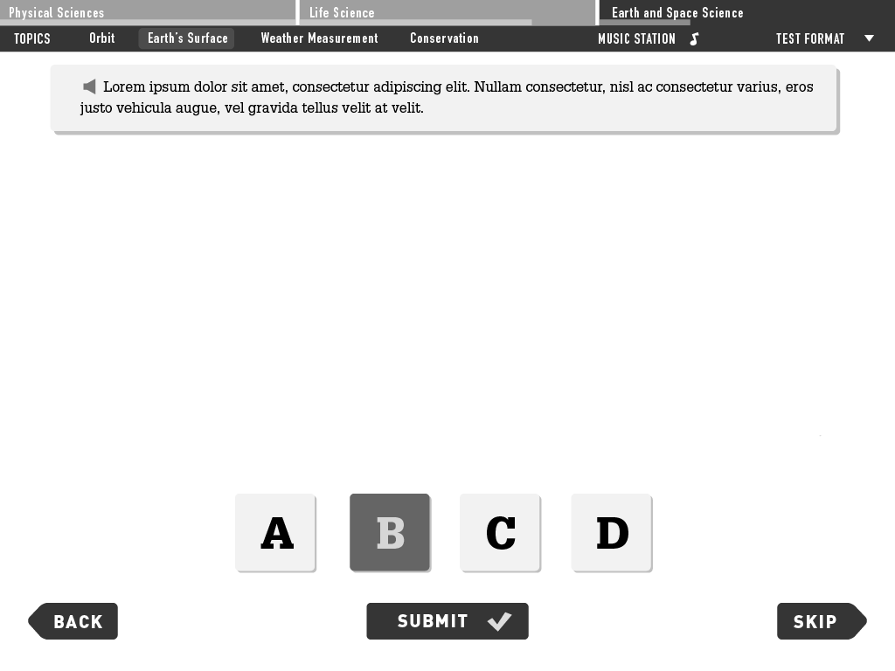
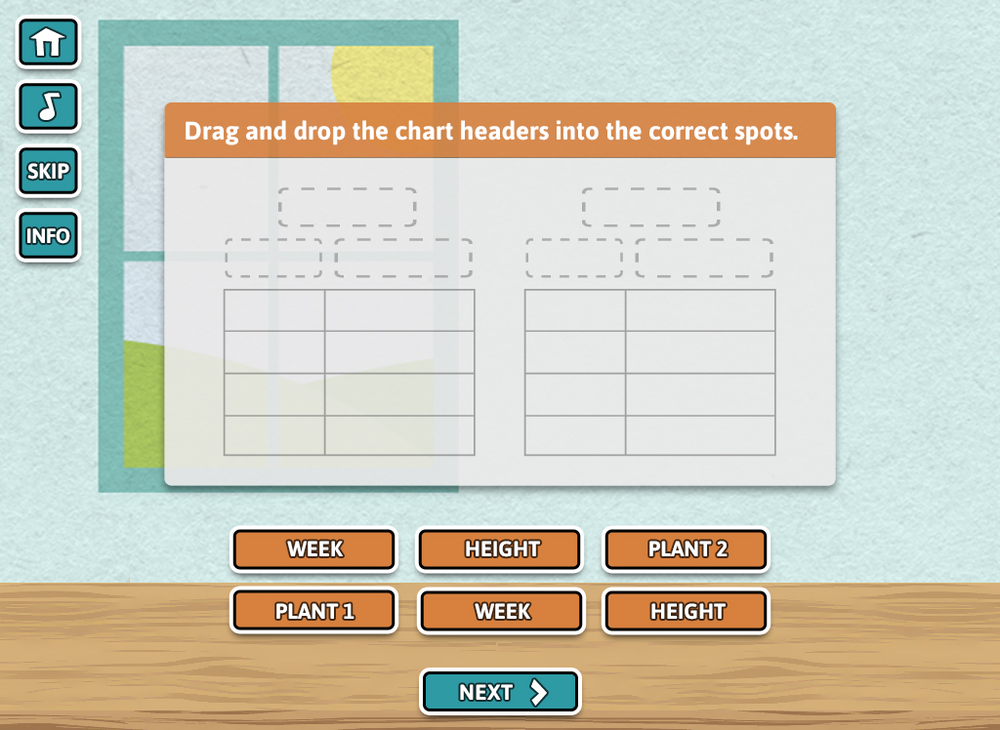
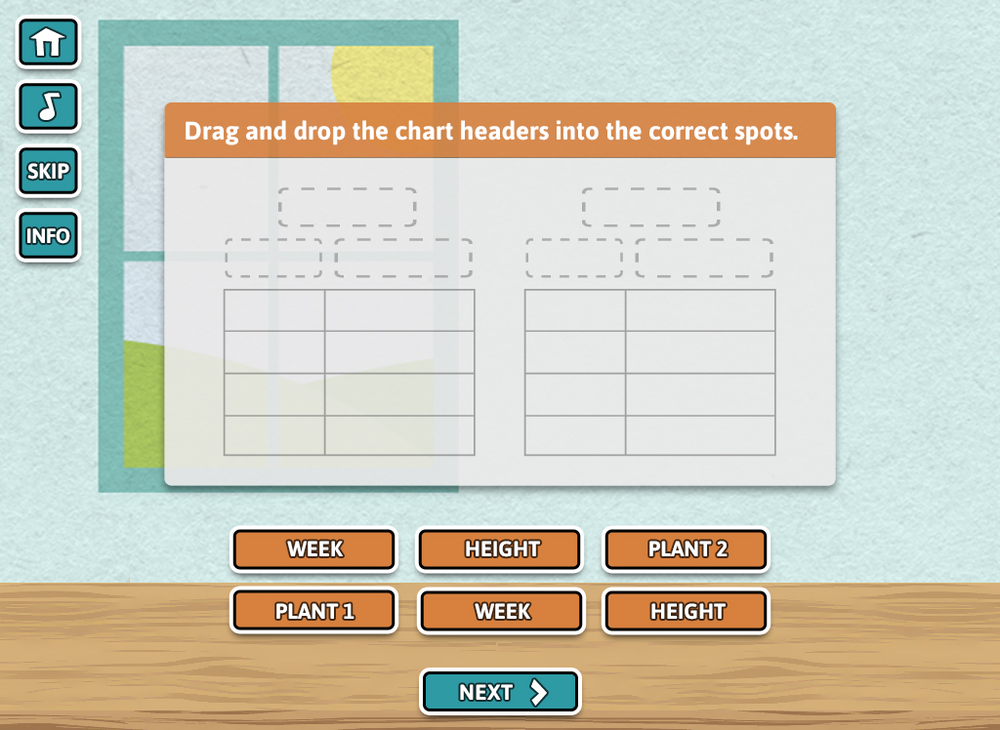

When schools rely on fact memorization to prepare for standardized tests, students lose interest in the subject matter and miss its connection to the real word. This tablet-based alternative tests students’ conceptual knowledge and creative problem solving in an engaging, exploratory format.
inSight was my senior capstone project consisting of research, design, user testing, and interactive prototyping. This year-long project was a collaboration with classmate Matt Denzer.
To narrow the topic of our project from general education to science-based standardized testing, we visited local science museums and researched educational books and iPad apps We also looked into existing test methods and met with local educators to discuss their experiences teaching young students.


 



The style and content of the app is inspired by game elements and cartoon graphics to make the test more engaging to students.
The wireframes focus on two science topics — the effect of plant roots on erosion and the effect of sunlight on plant growth. Each test question is an interactive piece through which students demonstrate skills and explain their understanding of the subject matter.


We conducted a scripted user test with seven local students. Using a paper prototype, we asked the students to complete common tasks within the app.
The feedback was mostly positive and we revised the designs based on common problems. Details about our test methods and results can be found on pages 23-28 in the Process Book (linked below).

 



In the second phase on the project, we refined the interface style and began building the interactive prototype. This demo is a combination of interactive elements and UI animations. It was built in HTML and jQuery and wrapped in PhoneGap to create a native iPad app.
A working demo of inSight was displayed at the University of Cincinnati’s DAAPWorks in 2012.
The interactive prototype was built to work on iOS 5.